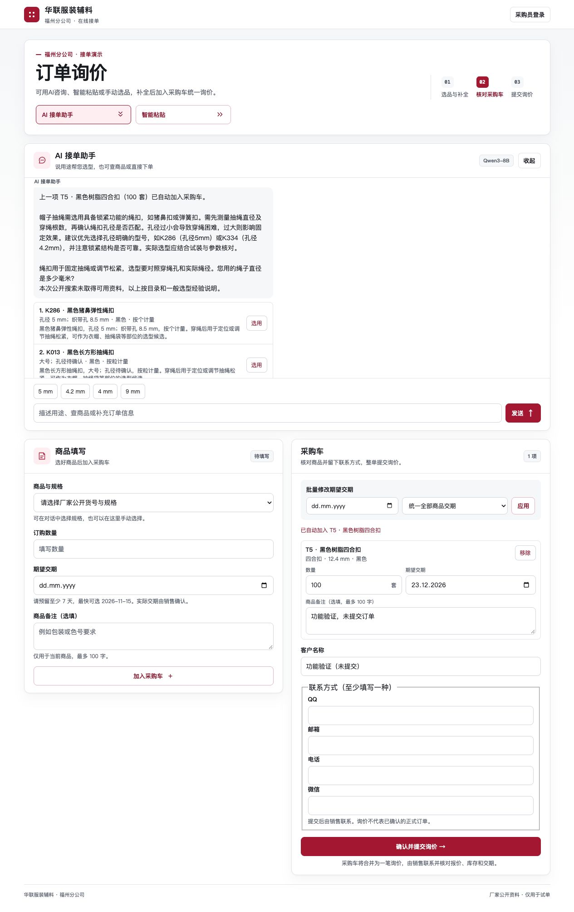

AI-Assisted B2B Ordering
A working prototype for Hualian Garment Accessories' Fuzhou ordering workflow: turning purchasing requests into catalogue-backed recommendations, editable carts and orders for sales review.
What I built
I developed and deployed a Python and SQLite web application integrating self-hosted Qwen3-8B through Ollama on a Compshare cloud GPU instance. Customers can describe what an accessory should do, paste procurement text, or choose products manually.
The application retrieves relevant entries from a 100-SKU catalogue across 10 categories. Product descriptions, materials, dimensions and selection notes give the model context for matching customer needs. Missing specifications remain subject to confirmation.
View the trial interface

Architecture
Browser: chat / procurement text / form → Python HTTP API and catalogue retrieval → Ollama / Qwen3-8B structured extraction → Server-side product and field validation → Item draft → cart → SQLite → Excel export and SMTP notification queue
The model receives a bounded set of relevant catalogue records. SKU membership, quantities, units, dates and access permissions are checked by the backend. The application does not depend on the model alone to validate an order.
Workflow design
- Buyer and guest entry: internally issued buyer accounts see their own orders and can reorder; guests submit inquiries with at least one contact method.
- Progressive completion: the assistant asks for missing information. A complete item moves to the cart when the customer starts another product inquiry; unfinished drafts are retained.
- Procurement-text parsing: rule-based parsing plus optional model assistance handles pasted text and Excel rows, shared or separate delivery dates, ambiguous products and unit mismatches.
- Sales operations: role-based dashboards support order review, four statuses, status undo, Excel export and configurable email notifications.
- Reliable submission: database transactions, request IDs and a retryable mail outbox protect order storage from duplicate requests and temporary delivery failures.
Validation and deployment
The current suite has 52 automated regression tests covering catalogue retrieval, draft transitions, invalid types and quantities, date constraints, order ownership, role permissions, notifications and deployment transport. Tests use isolated databases and mocked mail delivery.
Browser checks verified that completed items retain their quantity, delivery date and notes when automatically added to the cart; incomplete drafts remain editable; repeated inquiries do not add the same completed draft again.
A single SSH deployment command validates source files, checks migrations on a database copy, backs up the existing application, restarts the service and performs health checks. Failed post-update checks trigger an attempted source rollback. Orders, private configuration and model weights remain separate from source updates.
Scope and current status
This is a trial prototype. The catalogue includes public supplier listings and size/colour variants, with missing specifications and legacy entries explicitly flagged. Sales confirms live availability, final prices and actual delivery dates. The tests demonstrate the covered workflows, without establishing production-scale capacity or recommendation accuracy.
The source repository is private. This page presents the design, implementation scope and validation results.
Stack: Python standard library, SQLite, JavaScript, HTML/CSS, Ollama, Qwen3-8B, SMTP and Git/SSH.